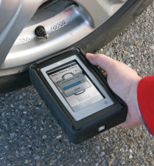

This function is used to teach-in new tire pressure sensors in cars with tire pressure monitoring (TPM).
If any sensor has been replaced a new teach-in of the tire pressure sensors has to be performed. All sensors must be run through the teach-in again even if only one has been replaced.
Test conditions:
Ignition on, engine off.
Activation equipment for tire pressure sensor available.
Procedure:
Press "OK" to start the function.
A dialogue box shows status for tire pressure sensors and teach-in of tire pressure.
Press "OK" to set the receiver in TPM-programming mode. If successful, a short sound is heard from the horn and left front direction indicator light is activated.
Within 2 minutes, go to LEFT FRONT WHEEL and activate the tire pressure sensor so that it sends a programming message with the activation equipment. Place the activation equipment against the tire leaning upward at an angle against the valve (see figure). If successful, a short sound is heard from the horn, the direction indicator light is turned off, and the next direction indicator light is activated.

Repeat step 4 for RIGHT FRONT WHEEL.
Repeat step 4 for RIGHT REAR WHEEL.
Repeat step 4 for LEFT REAR WHEEL.
If successful, a short sound is heard from the horn and all direction indicator lights turn off.
If any of the tire sensors have not been programmed within the 2-minute interval, the system will automatically exit the programming mode and steps 1-7 must be repeated.